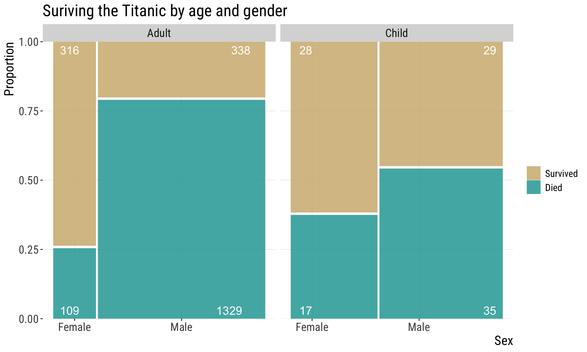

[1] 2 1 10# now, to convince yourself, do it again
sample(x, size = 3)[1] 8 7 10Statistics & Samples
Last lecture we discussed:
Ask for volunteers to remind these concepts
These learning goals are for the entire topic/unit. They will also be available in the study guide.
One notable example of when this may not be good enough is cryptography, but that’s outside of our scope. If you’re curious, you can learn more here.
[1] 2 3 6[1] 2 3 6A variable is a characteristic measured on individuals drawn from a population under study.
Data are measurements of one or more variables made on a collection of individuals. (i.e., your sample)
![[Cueball reading off a smart phone to someone off-screen.] Cueball: According to this polling data, after Kirk and Picard, the most popular Star Trek character are Data. Off-screen voice: Augh! [Caption below the frame:] Annoy grammar pedants on all sides by making "data" singular except when referring to the android.](https://imgs.xkcd.com/comics/data.png)
Numeric (also known as quantitative)
Categorical (also known as class or nominal variables)
Why do we care about these types? We will focus a lot on this in our next topic about how to display and describe data. Knowing what kind of variable we have drives our models of data analysis, and is therefore critical to the enterprise of statistics.
Discrete: can only take some values within acceptable interval
Examples:
Continuous: Can take any value within acceptable interval
Examples:
Examples:
We predict the values of response variables from explanatory variables.
Outdated nomenclature: dependent and independent variables

Image from: Wikipedia Commons.
Consider the fate of the approximatley 2,200 passengers of the titanic, including children and adults of both sexes.


Variables? Types? Explanatory & response variables?
Describe the population this result came from…
How far would you generalize from this to “Women & Children 1st?”
Experimental or observational study?
In Experimental Studies, researchers assign treatments to individuals.
In Observational Studies, researchers do not assign treatments to individuals.
But it can, of course, suggest it
Because researchers do not assign treatments in observational studies, observations cannot prove causation or disentangle cause and effect.
![[ [Cueball is talking to Megan.] Cueball: I used to think correlation implied causation. [Cueball lift his hand while continuing to talk to Megan.] Cueball: Then I took a statistics class. Now I don't. [Back to the same situation as the first frame.] Megan: Sounds like the class helped. Cueball: Well, maybe.]](https://imgs.xkcd.com/comics/correlation.png)
The distance between jupiter and the sun correlates with the number of secretaries in-alaska

As the distance between Jupiter and the Sun increases, the gravitational pull on Earth fluctuates, leading to a rise in cosmic productivity waves. These waves, when they reach Alaska, have been found to have a magnetic effect on the influx of secretarial energy, prompting more individuals to pursue careers in Alaska as professional secretaries. It’s like a celestial calling for secretarial excellence in the land of the midnight sun.
What is this? “Random correlations dredged up from silly data, turned into linear line charts. Now with AI-generated explanations of the causal connection and silly images to accompany the charts!” https://tylervigen.com/

{kind=link}